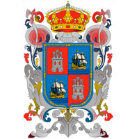

La historia de Campeche propiamente dicha empieza en la primera mitad del siglo XVI. Antes de eso, el territorio que hoy se denomina Campeche y, en general, la península de Yucatán, era un reducto territorial en el que se desarrolló, probablemente por más de un milenio, el pueblo y la cultura maya y que fue llamado por los propios mayas, el Mayab. El estado cuenta con tres tipos de climas: Am cálido húmedo con abundante lluvia en verano, A(W) cálido subhúmedo con lluvias en verano y BS1(h') semiseco cálido. En general, el clima del estado de Campeche es cálido subhúmedo con lluvias en verano y con una precipitación pluvial de 1,300 a 1,500 mm; el período de lluvias es de junio a octubre. La temperatura media anual es de 27 °C; no se presentan heladas, y en cuanto a huracanes, su litoral es el de menor incidencia. Los mayas conocieron y aprovecharon las cualidades del palo de tinte, árbol silvestre que distinguieron con el vocablo ek; desde entonces su presencia influyó en la historia de la región de Campeche, pues fue un recurso que despertó ambiciones, causó beligerancias, provocó enfrentamientos y caracterizó la zona de los ríos, dándole fama internacional bajo el nombre de palo de Campeche. De este palo negro se aprovecharon los indígenas para teñir mantas, de lo cual tomaron conocimiento los españoles para hacer el mismo uso, llevándolo en cantidades considerables a la península ibérica. Una crónica relativa a esta época señala que cuando los españoles conquistaron la región peninsular, descubrieron grandes cantidades de palo de tinte, al que también denominaron palo de Campeche; así, en lugares donde había ciénagas o en sitios húmedos, encontraron árboles de diez brazos de alto y el grueso de una pipa, que podían producir hasta cuarenta o cincuenta quintales de madera tintórea. Como anteriormente no había sido explotado, su desarrollo era considerable, y en aquellos tiempos su aprovechamiento hubiera exigido numerosos hombres, navíos y muchos años, desde Términos hasta Cabo Catoche. La variada alimentación de los mayas se enriqueció más con la llegada de los españoles. Los navegantes aportaron a la gastronomía local nuevos componentes y formas de preparación. Un gran pilar de la gastronomía campechana es sin duda la enorme variedad de productos que el mar le ha proporcionado a sus habitantes desde tiempos inmemoriales. Las diversas especies de pescado y el camarón han sido los principales ingredientes de muchos de los alimentos de la región, aunque no hay que olvidar aquellos que pertenecían originalmente a la cultura maya, como el pavo, el venado, el jabalí y posteriormente el cerdo, introducido por los españoles. Algunos de los ingredientes y platos más característicos de Campeche son el cazón con el que se hacen panuchos, empanadas, tamales, tacos y pan de cazón; el pámpano en escabeche y los camarones al coco, en paté, en coctel y en platillos calientes; el chile x´catic que se prepara con relleno de cazón y capeado; los cangrejos, de los que se comen las patas en frío con distintos aderezos. También Hay esmedregal, raya, sierra, pulpos, calamares y otras especies como el pámpano, que se empapela con achiote y una pizca de cominos o se prepara en salsa verde; el calamar relleno de camarón y los tamales rellenos de hoja de chaya y huevo cocido, envueltos en hojas de plátano. El chile habanero es el más común para las salsas, aunque también se utilizan otros para hacer adobos; el achiote es muy apreciado así como las especias y hierbas de olor. La comida campechana es muy similar a la yucateca, de modo que en ella encontramos expresiones culinarias como el queso relleno, la cochinita pibil, el relleno negro y el famoso mucbil-pollo.32 Recetas elaboradas a finales del siglo XIX y principios del XX,33 revelan una gran riqueza culinaria. Sin embargo, por el hecho de que algunos de los ingredientes utilizados en aquellos tiempos (como tortugas marinas), están vedados ya que las especies involucradas se encuentran en peligro de extinción, estos platillos tradicionales ya no son cocinadas. A pesar de ello, tales recetas son testimonio de la diversidad culinaria de la región.
